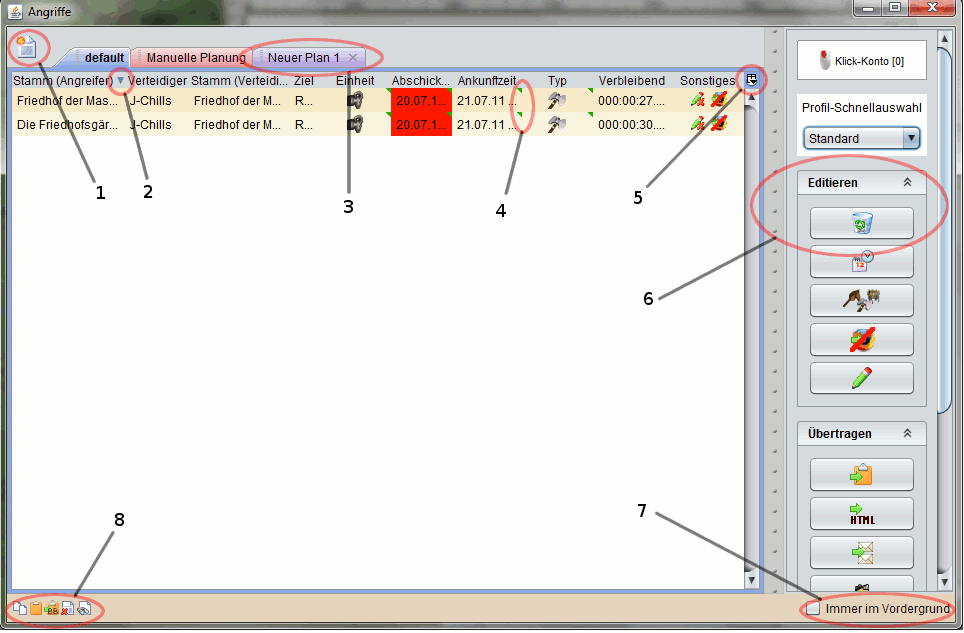

| |
Grundlagen - Ansichten |
| |
| An dieser Stelle werden die Grundlagen zu den verschiedenen Ansichten erklärt, die wohl hauptsächlicher Dreh- und Angelpunkt in DS Workbench sind. Um die Dokumentation kurz zu halten wird hier nur auf die Angriffsübersicht eingegangen, die jedoch alle relevanten Teile enthält die auch genauso in anderen Ansichten auftauchen. |
| |
|  |
| |
| Der Screenshot zeigt die Angriffsübersicht. Alle wichtigen Funktionen sind mit entsprechenden Markierungen versehen und werden im Folgenden erklärt: |
| |
- Neues Set erstellen: Mit diesem Button werden neue Sets erzeugt. Ein Set ist eine Sammlung beliebig vieler Einzelelemente einer Ansicht, wie z.B. Angriffe in Angriffsplänen oder Notizen. Jedes neu erstellte Set bekommt einen Standardnamen, eine laufende Nummer und wird als neuer Tab eingefügt. Viele Ansichten unterstützen Sets, in einigen Ansichten ist diese Funktion nicht verfügbar.
- Sortierreihenfolge: Der blaue Pfeil im Titel einer Tabellenspalte zeigt die Sortierreihenfolge an. Ein Pfeil der nach unten zeigt deutet auf eine absteigende Sortierung hin, ein Pfeil nach oben bedeutet aufsteigend sortiert. Die Sortierung ändert man, indem man auf den Titel einer Spalte klickt.
- Set-Tabs: Sets die über Funktion 1 erzeugt oder bereits von DS Workbench vorgegeben werden tauchen als eigener Tab auf. Selbst erzeugte Sets können über einen Doppelklick auf den Tab umbenannt werden. Weiterhin können selbst erzeugte Sets und alle darin enthaltenen Elemente jederzeit über einen Klick auf das kleine Kreuz auf der rechten Seite des Tabs gelöscht werden. Für vorgegebene Tabs sind diese beiden Funktionen nicht verfügbar.
- Veränderbare Zellen: In DS Workbench gibt es eine Vielzahl von Tabellen, in denen der überwiegende Teil der Einträge direkt in der Tabelle verändert werden kann. Zellen bei denen das möglich ist sind mit einem grünen Pfeil an der rechten oberen Ecke gekennzeichnet. Über einen Doppelklick auf eine solche Zelle wird der entsprechende Editor geöffnet und der Wert kann verändert werden. Die Bearbeitung wird abgeschlossen wenn man irgendwo außerhalb des jeweiligen Editors klickt oder einen entsprechenden Button bei speziellen Editoren betätigt. Einträge in Zellen die diesen Pfeil nicht aufweisen sind auch nicht veränderbar.
- Tabelle konfigurieren: Über diesen Button kann aufgewählt werden, welche Spalten einer Tabelle sichtbar sind. Diese Funktion kann man etwa dafür benutzen, um den Platzbedarf einer Ansicht zu reduzieren oder einfach Informationen die man nicht benötigt auszublenden. Weiterhin erlaubt es das Menü hinter diesem Button die automatische Größenbestimmung der Tabellenspalten zu verändern.
- Das Ansichtsmenü: Das Ansichtsmenü beinhaltet verschiedenste Funktionen die von Ansicht zu Ansicht unterschiedlich sein können. Hinter den Buttons verbergen sich entweder weitere Dialoge um bestimmte Einstellungen oder Veränderungen vorzunehmen, oder sie lösen eine einzelne Aktion aus. Als interne Hilfe sind ausführliche, sogenannte Tooltips zu jedem Button vorhanden der angezeigt wird, wenn man mit dem Mauszeiger wenige Sekunden über dem Button verweilt. Weiterhin kann das Hauptmenü jederzeit über die Leiste auf der linken Seite ausgeblendet werden um Platz zu sparen.
- Immer im Vordergrund: Diese Funktion erlaubt es, eine Ansicht immer im Vordergrund zu halten. Ist sie aktiviert, kann kein Fenster die entsprechende Ansicht überlagern. Ausnahmen bilden einige Dialoge wie z.B. die Einstellungen oder Ansichten die im Anschluss auf "Immer im Vordergrund" gestellt werden.
- Shortcut Funktionen: Jede Ansicht in DS Workbench unterstützt eine Auswahl von Shortcut Funktionen, also Funktionen die über bestimmte Tastenkombinationen ausgelöst werden. Die Angriffsübersicht unterstützt alle diese Funktionen, welche die folgenden Bedeutungen haben (Reihenfolge wie im Screenshot zu sehen):
- Kopieren: Ausgelöst über STRG+C werden markierte Einträge der Tabelle in die Zwischenablage kopiert. Meist geschieht das in einem speziellen, internen Format, so dass es nur Sinn macht die kopierten Einträge in derselben Ansicht an anderer Stelle, etwa in einem anderen Set, wieder einzufügen.
- Ausschneiden: Ausgelöst über STRG+X werden markierte Einträge in die Zwischenablage kopiert und anschließend aus der Tabelle gelöscht.
- Kopieren als BB-Code: Ausgelöst über STRG+B werden die markierten Einträge als BB-Codes in die Zwischenablage kopiert. Wie das Ergebnis aussieht kann man über den BB-Editor selbst definieren.
- Löschen: Ausgelöst über ENTF werden die markierten Einträge der Tabelle gelöscht, nachdem man die Löschung per Sicherheitsabfrage bestätigt hat.
- Suchen: Ausgelöst über STRG+F erlaubt es die Suche die aktuelle Tabelle nach bestimmten Kriterien zu durchsuchen. Wie sich die Suche gestaltet hängt von der jeweiligen Ansicht ab.
|
|
| |
|
Besonders talentierte Fingerakrobaten können auch die beiden Markierungsmöglichkeiten kombinieren. Hierfür muss permanent die Strg-Taste gedrückt sein, um einzelne Markierungsstarts zu wählen. Anschließend wird mit gleichzeitig gedrückte Shift -Taste der Endpunkt der Markierung angeklickt. |
| |
| |
| |
|
|